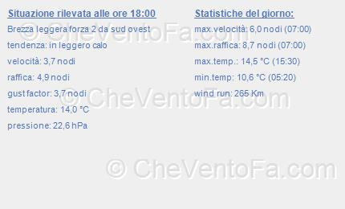
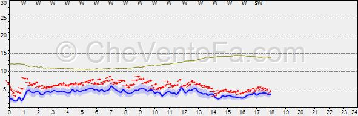

<div ng-controller="stazioniController as sc" >
  <div layout="row" >
    <md-sidenav class="md-sidenav-left" md-component-id="left" md-is-locked-open="$mdMedia('gt-md')">
      <md-toolbar layout="row" >
        <h1 class="md-toolbar-tools" >Stazioni anemometriche</h1>
      </md-toolbar>

      <md-radio-group ng-model="stazioneScelta" ng-change="toggleStazioni()">
        <md-radio-button ng-value="stazione" ng-repeat="stazione in stazioni">{{stazione}}</md-radio-button>
      </md-radio-group>

    </md-sidenav>

    <div layout="column" >
      <md-toolbar layout="row" class="md-accent" >
        <md-button ng-click="toggleStazioni()" hide-gt-md="" style="min-width: 40px;">
          <md-icon  >&#xE8EE;</md-icon>
        </md-button>
        <h1 class="md-toolbar-tools" >{{stazioneScelta}}</h1>

      </md-toolbar>
      <md-datepicker class="md-toolbar-tools" ng-model="myDate" md-placeholder="Inserire data"></md-datepicker>
      <md-card>
        
      </md-card>
      <md-card>
        
      </md-card>

    </div>
  </div>
</div>